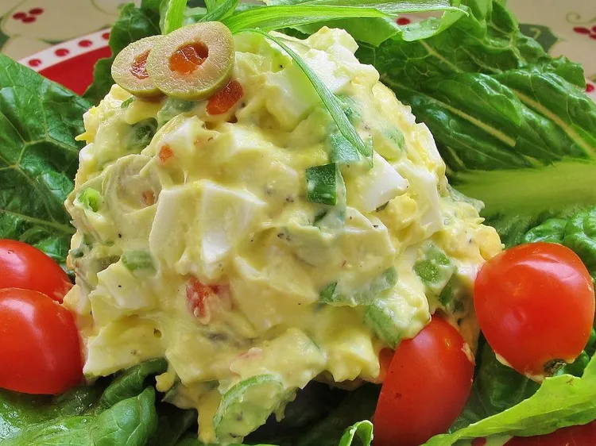

Home
Egg Salad with Olives

Description
This is a great egg salad with chopped pimento-stuffed olives. I got this recipe from a woman I once babysat for! Serve it on toasted bread with lettuce and a bit of chopped celery.
Prep Time: 15 mins |
Cook Time: 10 mins |
Total Time: 25 mins |
Servings: 4 |
Yield: 2 cups
Ingredients
- 8 eggs
- ½ cup mayonnaise
- 1 teaspoon ground black pepper
- ¼ teaspoon paprika
- 2 tablespoons chopped pimento-stuffed green olives
Steps
- Place eggs in a saucepan and cover with water. Bring to a boil, cover, remove from heat, and let eggs stand in hot water for 10 to 12 minutes. Remove eggs from hot water, cool under cold running water, peel, and chop.
- Combine eggs, mayonnaise, black pepper, and paprika in a bowl; mash with a potato masher or fork until smooth. Gently stir in olives. Refrigerate until ready to serve.
Nutrition Facts
349 Calories | 33g Fat | 2g Carbs | 13g Protein